01 — Basic CSS e Flexbox
Selettori, cascade, box model, Flexbox e responsive design
Sommario
Image Color Picker è uno strumento utile per campionare un colore da un’immagine.
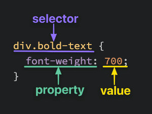
CSS può stilizzare qualsiasi elemento HTML; <div> e <span> sono contenitori
generici utili quando non esiste un elemento semantico più adatto.
Selettori
Selettori di base:
/* Universal */
* {
color: purple;
}
/* type selector */
div {
color: white;
}
/* Class selector */
.alert_text {
color: red;
}
/* Elemento che possiede entrambe le classi */
/* HTML -> <div class="alert_text severe_alert"> */
.alert_text.severe_alert {
color: purple;
}
/* Selettore ID: da usare con moderazione */
#title {
background-color: red;
}
Proprietà
colorimposta il colore del testo.background-colorimposta il colore di sfondo.font-familyaccetta una lista ordinata di famiglie. I nomi con spazi vanno tra virgolette e la lista dovrebbe terminare con una famiglia generica:font-family: "Times New Roman", serif.font-sizeimposta la dimensione del testo.font-weightimposta il peso; può usare parole chiave (normal,bold) o valori numerici normalmente compresi tra1e1000, se supportati dal font.text-aligncontrolla l’allineamento del contenuto inline.
/* Mantiene le proporzioni intrinseche */
img {
height: auto;
width: 500px;
}
Aggiungere CSS
- Esterno:
<link rel="stylesheet" href="styles.css">. È la soluzione normale: separa struttura e presentazione e consente al browser di riusare il file dalla cache. - Interno:
<style>/* regole CSS */</style>. È utile per una singola pagina o per esempi isolati. - Inline:
<div style="color: white; background-color: black">...</div>. Ha specificità elevata ed è difficile da mantenere; è meglio riservarlo a valori generati dinamicamente o a prove temporanee nei DevTools.
Cascade CSS
La cascade decide quale regola CSS viene applicata quando più regole puntano allo stesso elemento.
Regola pratica
In una versione semplificata, tra dichiarazioni della stessa origine e dello stesso livello di importanza il browser considera:
- specificità del selettore;
- ordine di apparizione, quando la specificità è uguale.
Origine, !important e cascade layers vengono valutati prima della specificità.
L’ereditarietà non è un terzo criterio di spareggio: fornisce un valore solo
quando l’elemento non riceve una dichiarazione applicabile per quella proprietà.
Specificity
Ordine di forza dei selettori:
ID selector → più forte
Class selector → medio
Type selector → più debole
Esempio:
<p id="title" class="text">Hello</p>
p {
color: blue;
}
.text {
color: green;
}
#title {
color: red;
}
Risultato:
Il testo sarà rosso.
Perché #title è più specifico di .text e p.
Più selettori = più specificità
<div class="main">
<div class="list subsection">Red text</div>
</div>
.subsection {
color: blue;
}
.main .list {
color: red;
}
Risultato:
Il testo sarà rosso.
Perché .main .list ha due classi, mentre .subsection ne ha una sola.
Stessa specificità: vince l’ultima regola
<p class="alert warning">Warning message</p>
.alert {
color: red;
}
.warning {
color: yellow;
}
Risultato:
Il testo sarà giallo.
Perché .alert e .warning hanno la stessa specificità, ma .warning viene scritta dopo.
Inheritance
Alcune proprietà vengono ereditate dai figli, per esempio color e font-family.
<div class="container">
<p>Hello</p>
</div>
.container {
color: blue;
}
Risultato:
Il paragrafo sarà blu.
Perché il p eredita color dal genitore.
Ma una regola diretta può sovrascrivere l’ereditarietà:
.container {
color: blue;
}
p {
color: red;
}
Risultato:
Il paragrafo sarà rosso.
Perché p ha una regola diretta.
Classe + classe sullo stesso elemento
Senza spazio:
.subsection.header {
font-size: 20px;
}
Seleziona un elemento che ha entrambe le classi:
<div class="subsection header">Latest Posts</div>
Classe dentro un’altra classe
Con spazio:
.subsection .header {
font-size: 20px;
}
Seleziona .header solo se si trova dentro .subsection:
<div class="subsection">
<p class="header">Latest Posts</p>
</div>
Da ricordare:
.subsection.header → stesso elemento
.subsection .header → elemento dentro un altro elemento
Grouping selectors
La virgola serve per applicare la stessa regola a più selettori.
<div class="subsection header">Latest Posts</div>
<p class="subsection preview">Post preview</p>
<p class="subsection" id="text">With id</p>
.subsection.header,
.subsection.preview,
.subsection#text {
font-size: 20px;
}
Significa:
Applica font-size: 20px a tutti e tre gli elementi.
Consiglio pratico
Preferisci classi semplici:
.card {
background-color: white;
}
.card-title {
font-size: 24px;
}
.card-text {
color: gray;
}
Evita selettori troppo annidati:
/*Peggio*/
main section div ul li a span {
color: red;
}
/* Meglio */
.nav-label {
color: red;
}
Regole da ricordare
ID batte class.
Class batte type.
Più classi battono meno classi.
A parità di specificità, vince la regola scritta dopo.
Le proprietà ereditate sono deboli: una regola diretta le sovrascrive.
Meglio usare classi semplici e mantenere bassa la specificità.
Strumenti e approfondimenti:
DevTools
DOM vs HTML
- HTML = codice iniziale scritto nel file.
- DOM = struttura attuale della pagina nel browser.
Esempio:
<!-- HTML iniziale -->
<div id="container"></div>
<!-- Dopo la modifica con JS, nel DOM -->
<div id="container">Hello</div>
JavaScript può aggiungere contenuto:
document.querySelector("#container").textContent = "Hello";
Il pannello CSS Overview aiuta a valutare colori, font, media query e regole inutilizzate dell’intera pagina.
Font
Riferimento: font CSS.
- In
font-familymeglio mettere dei fall-back per non ritrovarsi un sito rotto
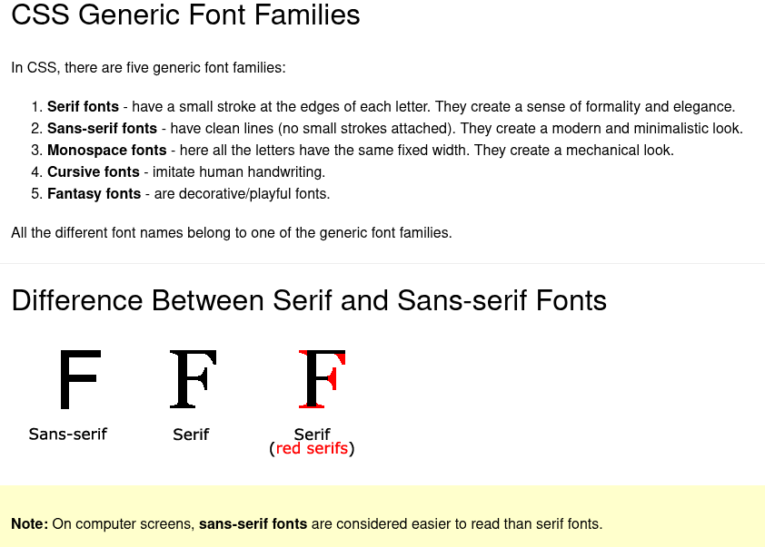
-
I font “web safe” sono comunemente presenti sui sistemi operativi, ma non sono garantiti su ogni dispositivo.
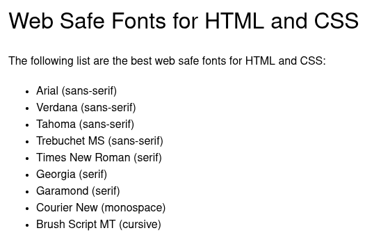
Box model
Nel layout CSS ogni elemento genera uno o più box. Un outline temporaneo aiuta a visualizzarne i confini:
* {
outline: 2px solid red;
}
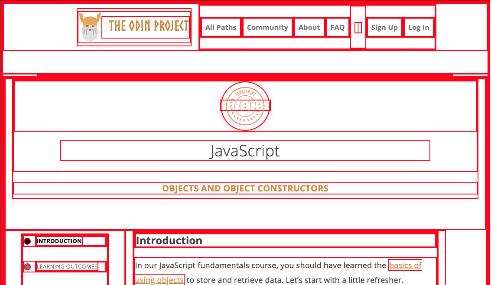

Dimensioni del box
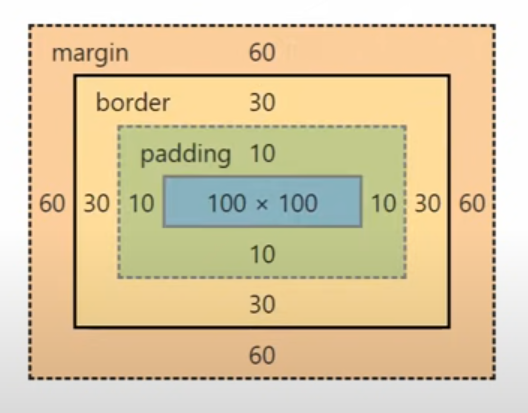
.box {
width: 100px;
height: 100px;
padding: 10px;
border: 30px solid purple;
margin: 60px;
background-color: red;
text-align: center;
}
Margin collapsing
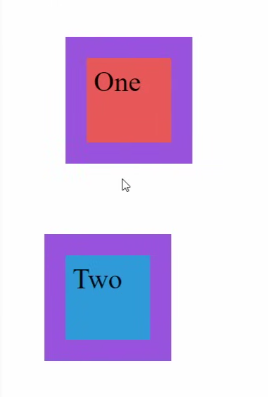
I margini verticali adiacenti di due box block nel normale flusso possono
collassare. Se entrambi sono positivi, la distanza risultante è il maggiore dei
due, non la loro somma: margin-bottom: 100px e margin-top: 70px producono
una distanza di 100px. Il collapsing non si applica allo stesso modo nei
layout Flexbox e Grid.
box-sizing
.box {
width: 100px;
height: 100px;
padding: 10px;
border: 20px solid purple;
margin: 60px;
background-color: red;
box-sizing: border-box;
}
Con il valore predefinito content-box, width e height misurano soltanto il
content box; padding e border si aggiungono alla dimensione dichiarata.
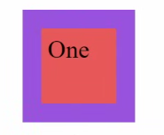
Con border-box, invece, padding e border sono inclusi in width e height;
il margin rimane sempre esterno.
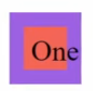
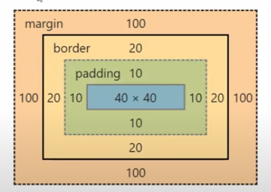
Approfondimenti:
Display: block, inline e inline-block
display: blockgenera un box block che normalmente inizia su una nuova riga e occupa la larghezza disponibile.display: inline, usato per esempio da<span>,<em>e<a>, partecipa al flusso del testo.widtheheightnon si applicano; padding e border sono visibili, ma quelli verticali non spostano le altre linee come in un box block.display: inline-blockscorre insieme al testo ma accettawidth,height, padding, border e margin come un box block.
Approfondimento: inline e inline-block a confronto.
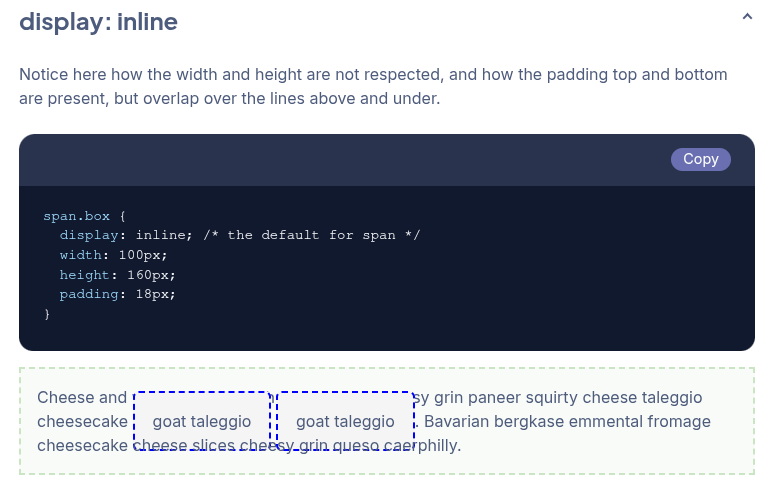
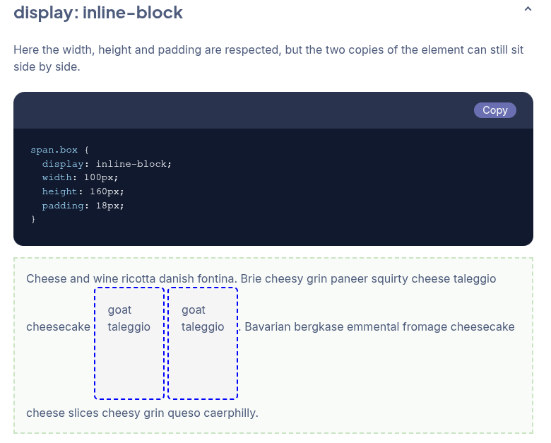
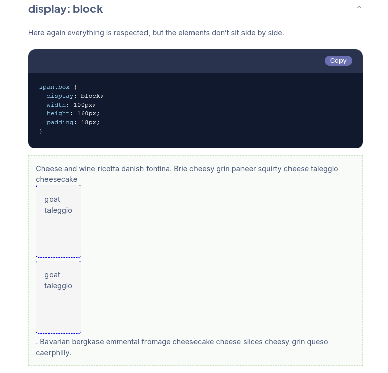
<div>e<span>sono contenitori generici: il primo è block per default, il secondo inline.- Il normal flow è il comportamento di layout predefinito prima di usare Flexbox, Grid, float o positioning. Riferimento: elementi block e inline.
Flexbox: display: flex
- L’elemento con
display: flexdiventa un flex container. - Solo i suoi figli diretti diventano flex item. Le proprietà del container ne controllano direzione, allineamento, spaziatura e wrapping; non si tratta di ereditarietà CSS.
- Un flex item può essere regolato con
flex,flex-grow,flex-shrink,flex-basis,align-selfeorder, oltre alle normali proprietà CSS.
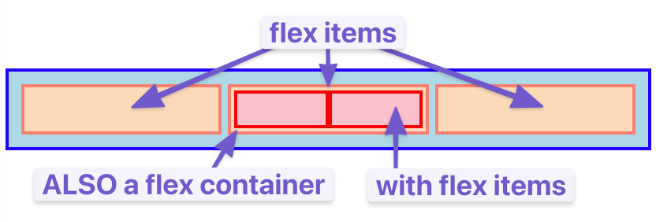
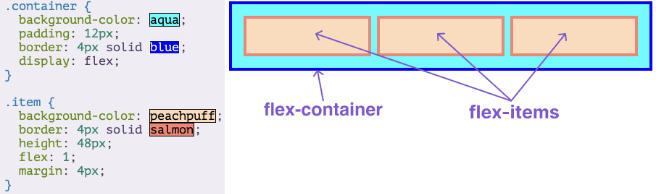
Flexbox può essere ricorsivo:
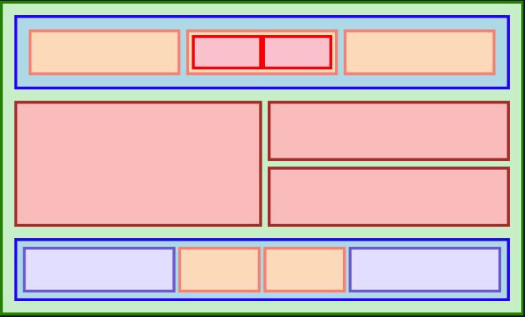
Un flex item può a sua volta diventare un flex container, ma gli elementi
annidati non diventano flex item finché il loro genitore non riceve
display: flex. Approfondimento: guida visuale a Flexbox.
Flexbox per contenitori
display: flex
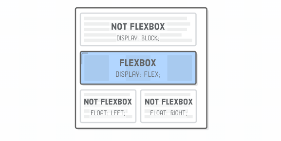
justify-content
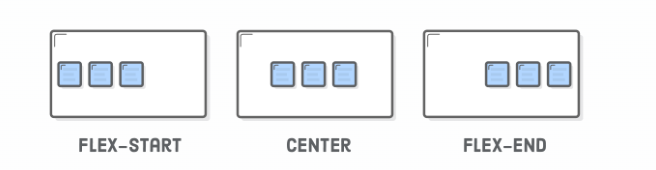
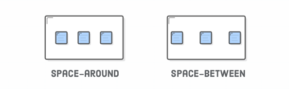
Se gli item crescono fino a occupare tutto lo spazio disponibile,
justify-content non ha spazio libero da distribuire.
gap
gap definisce la distanza tra gli item senza aggiungere margini esterni prima
del primo o dopo l’ultimo elemento.
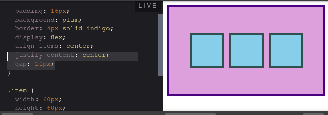
Mentalmente diventa (no margin-left su [1] e margin-right su [3]):
[1] 10px [2] 10px [3]
align-items
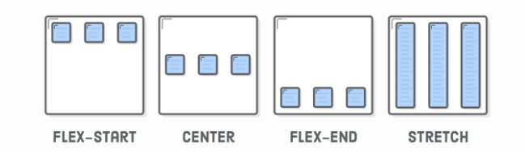
flex-direction (default: row)
flex-direction stabilisce il verso dell’asse principale. L’asse trasversale
rimane perpendicolare: con row è verticale, con column è orizzontale.
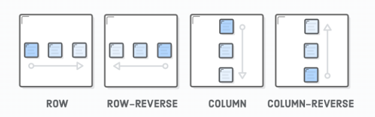
justify-content opera sull’asse principale; align-items sull’asse
trasversale. flex-basis misura la dimensione iniziale lungo l’asse principale,
quindi con column è legato all’altezza. Non è però necessario impostarlo ad
auto per evitare un’altezza nulla.
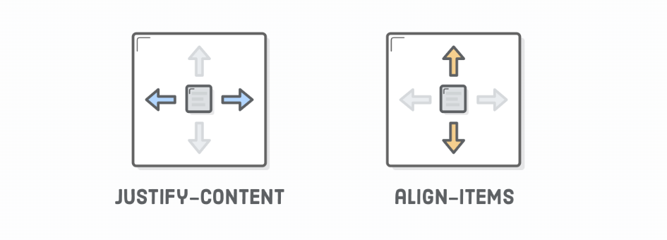
Grouping (concetto, non comando)
<div class='menu'>
<div class='date'>Aug 14, 2016</div>
<div class='links'>
<div class='signup'>Sign Up</div> <!-- This is nested now -->
<div class='login'>Login</div> <!-- This one too! -->
</div>
</div>
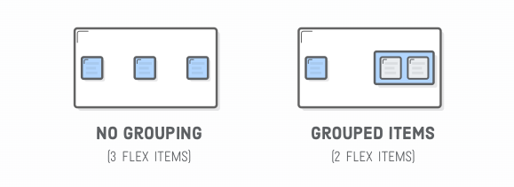
flex-wrap
Il valore predefinito è nowrap; wrap crea nuove righe o colonne quando lo
spazio non basta. Esiste anche wrap-reverse.
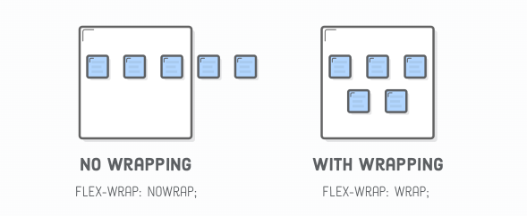
Esempio:
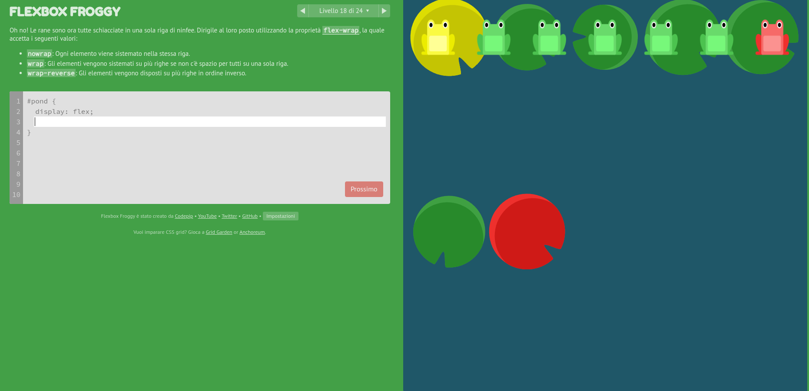
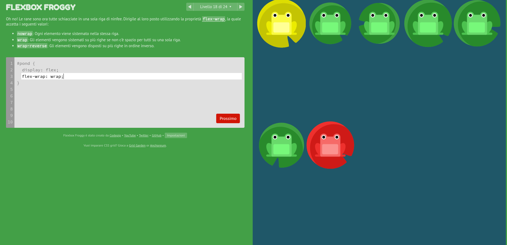
align-content (con wrap)
align-content distribuisce le linee lungo l’asse trasversale quando il
container ha più linee e rimane spazio libero. Non allinea i singoli item e non
ha effetto utile su una sola linea.
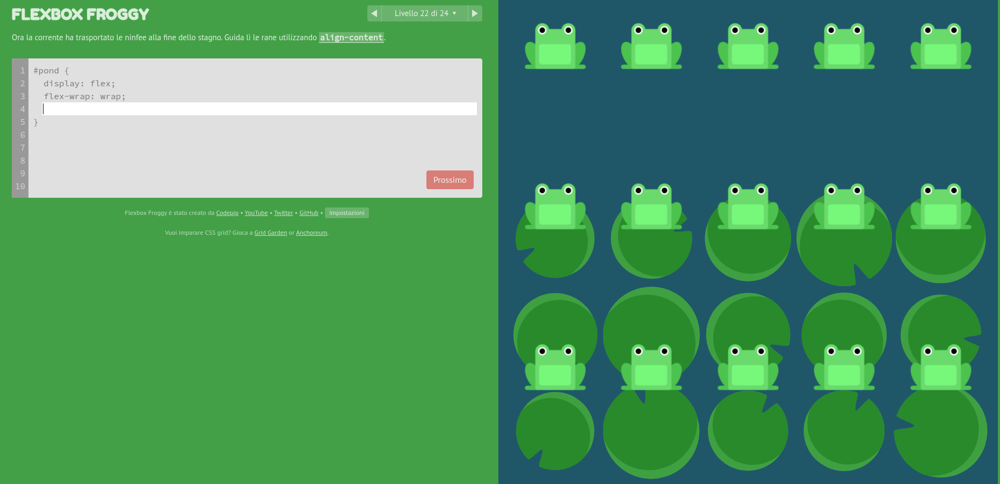
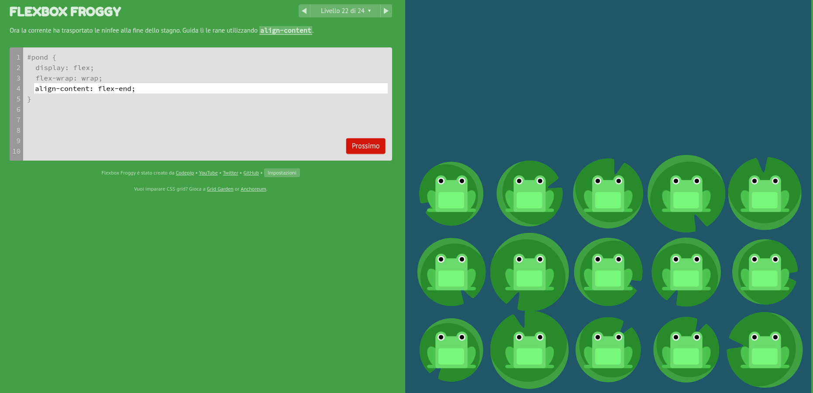
Flexbox per gli item
flex: 1
flex-grow: 1; /* può crescere */
flex-shrink: 1; /* può restringersi */
flex-basis: 0%; /* base iniziale nulla */
flex: <grow> <shrink> <basis>;
Per un numero positivo, flex: 1 viene normalmente espanso a 1 1 0%.
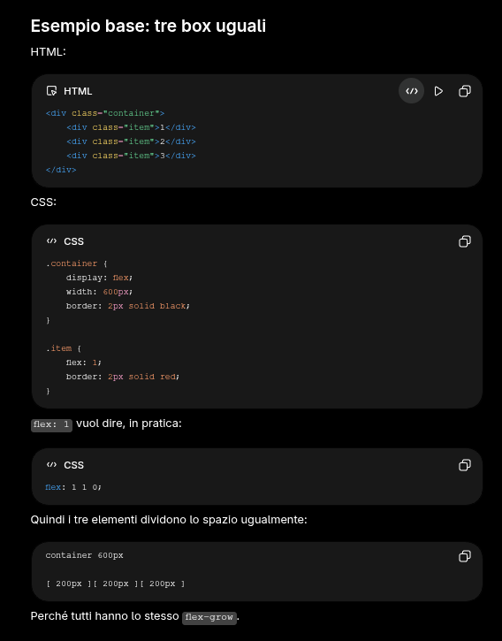
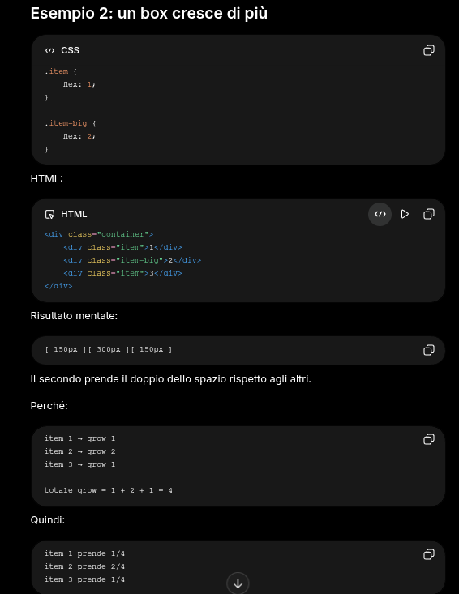
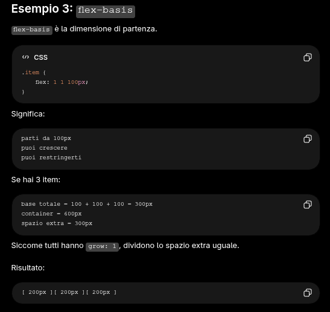
Riferimento: proprietà flex su MDN.
order
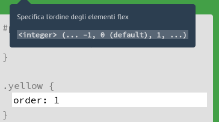
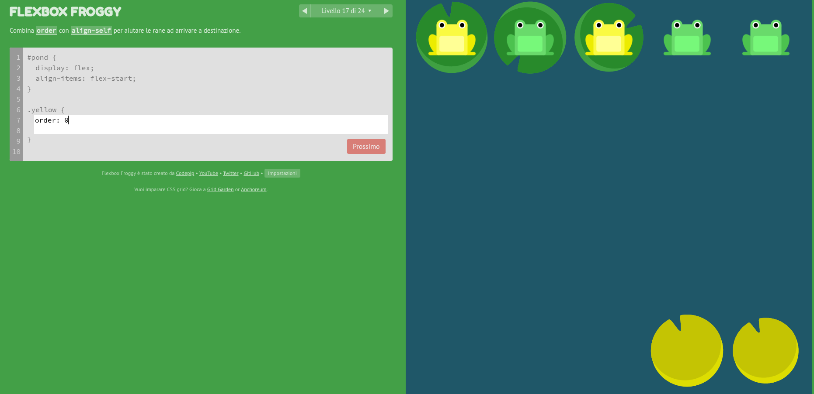
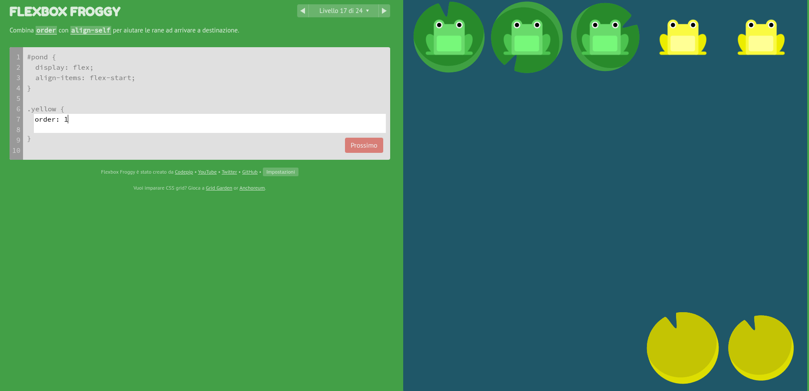
order cambia soltanto l’ordine visuale, non quello del DOM. Va usato con
cautela perché l’ordine di lettura e di navigazione da tastiera può rimanere
diverso.
align-self
Sovrascrive l’allineamento definito da align-items per un singolo flex item.
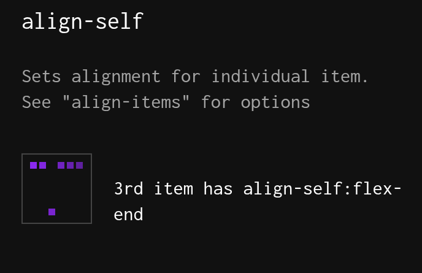
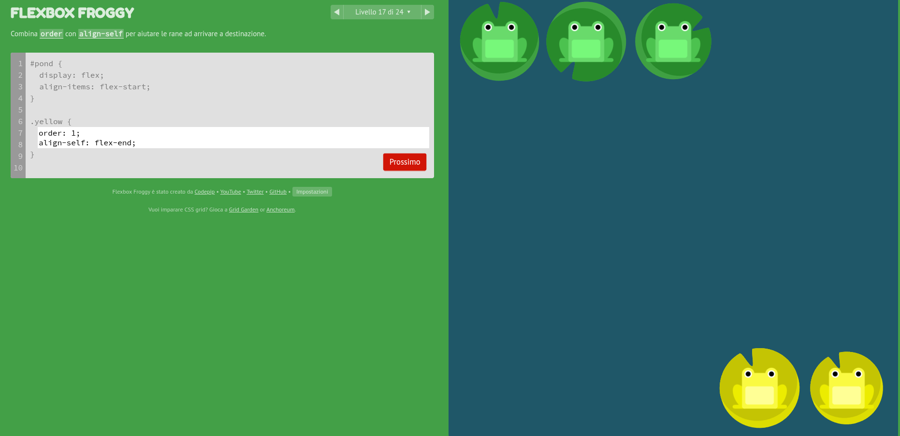
Risorse interattive:
Media query
Le media query applicano regole in base alle caratteristiche del viewport o del
dispositivo. Breakpoint come 480px, 768px o 1024px sono convenzioni, non
categorie universali: è meglio scegliere il punto in cui il contenuto smette di
funzionare correttamente.
body {
min-height: 100vh;
font-family: "Courier New", Courier, monospace;
}
/* Il layout cambia quando 768px non sono più sufficienti. */
@media (max-width: 768px) {
.title {
font-size: 26px;
}
.content {
flex-direction: column;
padding-bottom: 100px;
}
.footer {
text-align: center;
}
}
Cose utili
Altezza minima e sticky footer
body {
min-height: 100vh;
display: flex;
flex-direction: column;
}
.main {
flex: 1;
}
min-height: 100vh fa sì che il body sia alto almeno quanto il viewport; il
contenuto principale cresce e spinge il footer in fondo anche quando la pagina è
corta. Impostare invece una min-width fissa sul body può introdurre scroll
orizzontale sui dispositivi stretti e non sostituisce un layout responsive.
.class h1 e .class > h1
.class h1seleziona qualsiasih1discendente da.class, anche se profondamente annidato..class > h1seleziona soltanto glih1che sono figli diretti di.class.
Il combinatore va scelto in base alla struttura che il componente intende esporre, non soltanto in base a quale selettore sembra meno rigido.